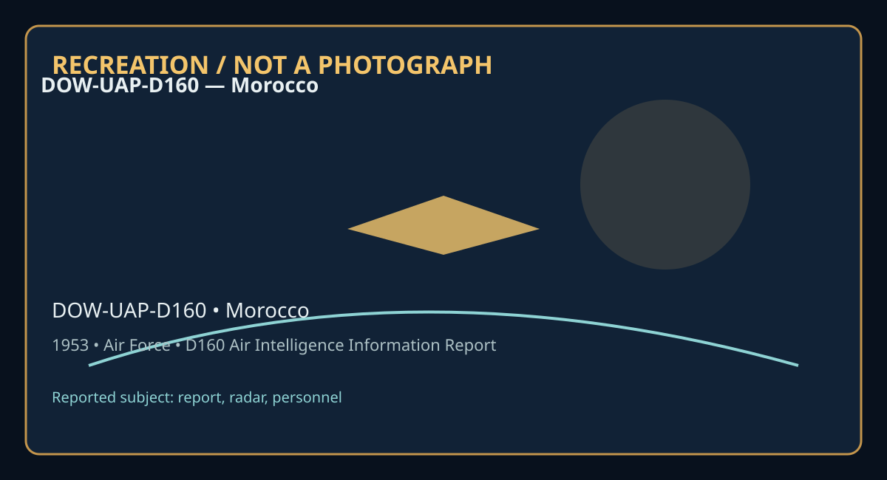

Release 07 / archival case file / DOW-UAP-D160
D160 Air Intelligence Information Report Morocco 1953
This d160 air intelligence information report places a report, radar, personnel thread in a 1953 Morocco record.
ID: DOW-UAP-D160
Filename:
DOW-UAP-D160-Air_Intelligence_Information_Report_Morocco-1953.pdfDate marker: 1953
Location: Morocco
Agency or collection signal: Air Force
Pages read: 3

RECREATION / NOT A PHOTOGRAPH. The diagram is an interpretive editorial aid, not source imagery.
What this document says
The opening page's extracted text begins: “AF FORM 11% APPROVED I JUNE 1!48 COUNTRY French Morocco REPORT HO. DI-1- AIR INTELLIGENCE INFORMATION REPORT SUBJECT UFOB AREA REPORTED ON Nortr. Fr Morocco and Mediterranean SPa I FROM (A,,,.<1) 316th Air Division Defense EVALUATION DATE OF REPORT IDATE OF INFORMATION 23 December 1953 16 Dec~mber 1953 A-1 PR£PAREO 8Y (O~t'I) Edward o. Wittmer Major USAF I SOURCE Detachllim1t 2 th AC&W S adron REFERENCES (O>nlrol ftttmbn, dirtctltt, 1)rnlou1 rtp;,n, tit., 01 appllca~I•) Primary Report: TwX 12-177 SUMMARY: (.lillller conclle ,ummarv ofreport, Glut lfgnl)kana 111 flnlll one-.0\ltence parograp/1, Luc 11tcl0.!Urtl at lo!Dn kft. &gm ttzt ofr,port on 11.F F<lrm Ill-Part IL) 1. Unidentj fied flyfr1g objects w~re observed on radar by personnel of Detachment 11 2 11 37th AC&W Squadron. The return variPd in shape from a V shape to \<J $hape to M shape. It faded after several minutes of observation. 2. It is the opinion of electronics personni-1 in this Division th1t such a return ·ght hav~ be--n caused by: a. Anomalous Propagation b. Sbip-Bornt- rad~r janm:iing Detachment 11 211 radar c. Geese or Storks in f1 igbt. 3. Logical deduction is that on~ of above mentiohed possibilities is the cause for his radar return. Authority NND57597 LIBRARY SUBJECT & , ...i:'.. COD.ES (oO~ 13 fi> /K .. . ·-· -------------- C'~e;c:~, '~1: , - ~~- ...1 -1t)L .. ("infl':'f' • 'f • ,:-nm£ ' , ~-, ~ . 1 i_6'5”
Across the 3 pages, the recurring terms are report, radar, personnel. Those details belong to this file, not to a generic case template. Page-level reading follows:
- Page 1: AF FORM 11% APPROVED I JUNE 1!48 COUNTRY French Morocco REPORT HO. DI-1- AIR INTELLIGENCE INFORMATION REPORT SUBJECT UFOB AREA REPORTED ON Nortr. Fr Morocco and Mediterranean SPa I FROM (A,,,.<1) 316th Air Division Defense EVALUATION DATE OF REPORT IDATE OF INFORMATION 23 December 1953 16 Dec~mber 1953 A-1 PR£PAREO 8Y (O~t'I) Edward o. Wittmer Major USAF I S
- Page 2: AF FORM 112-PART II U\iC~~S\filD~ APPROVED 1 JUNE.1948 AIR INTELLIGENCE INFORMATION REPORT FROM (Al/<ll<V) REPORT NO. PAGE OF PAGES 'Ihe folloving report is rendered in compliance with AFR 200-2. "'ulfPrP.ncP parai:rrRph six (6) of this regulation for formats. 1. Discription or thP. ObjActs (a) T/aring shapes, sAries of V' s, W's, and M's. (b) Size- N/A as r
- Page 3: AF FORM 112-PART 11 APPROVED I JUNlif.!943 •• AIR INTELLIGENCE INFORMATION REPORT FROM (Agencu) REPORT HO. PAGE OF PAGES 6. Identifving infol'Tlletion of all observers : (a) N/A (b) A/?,C V. A. Kay, .AF 12 4",7 411, Atr Surveillance Operator, Detachment 2 , 737th AC&W Squadron. Capt T.S. White, Detachment Colir"lender. Lt V. Paker, Controller. 7. TtJeethAr c
Historical context and disclosure schema
Read in context, this record belongs to the 1953 information environment: Air Force paperwork, a Morocco setting, and the reporting conventions visible in the source. Its broader disclosure value is procedural as well as anecdotal: it shows how an observation, material question, investigation, or analytical program was routed, described, and preserved. That makes it comparable to other Release 07 records without collapsing unlike evidence into one event.
Evidence limits
The source establishes that this document exists and records what its authors or quoted witnesses wrote. It does not, by itself, prove the identity, performance, origin, or physical reality of the reported subject. Extraction preserves wording but cannot restore missing attachments, authenticate provenance, or independently validate testimony. Interpretations beyond the page-specific record remain hypotheses.
Source: supplied PDF in research/tranche-07. This article is a research aid, not a claim that the reported object was non-human.